Java programming language is a requirement for UMS. Therefore you need to install Java second edition runtime environment (JRE), at least version 6. You can get the latest JRE here.
After installing Java Runtime you can install Universal Media Server. Double-click the setup file and follow the instructions.
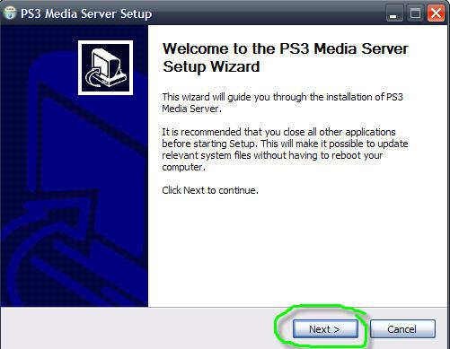
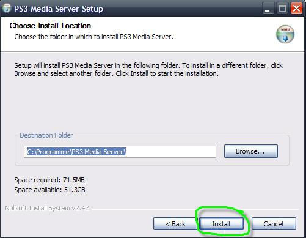
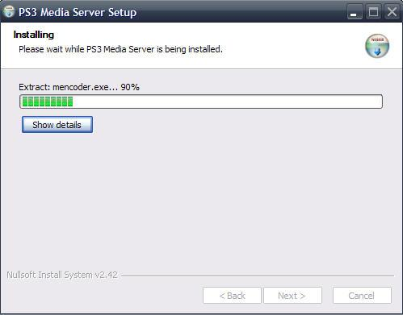
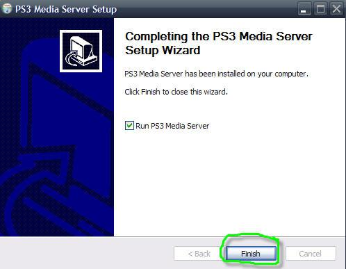
You also need to have Java installed on Linux. You should set environment variable JAVA_HOME to JRE installation path. After that you have to decompress the setup archive for Linux with:
tar xzf filename.tgz
You have to install MPlayer, MEncoder, FFmpeg and tsMuxeR. If you like to stream web content also install VLC. Make sure that all binaries of these tools can be found via PATH variable. Start a shell, cd to your installation directory and start UMS with:
./UMS.sh
Check permissions and set them if necessary with:
chmod ug+x UMS.sh
You can either use packages from your Linux distrubution or compile the tools by yourself. Sometimes distributors do not set important compiler options, e.g. scaling support for FFmpeg. So I recommend you to compile it from source.
First start up and login to your PS3 or other viewing device. This will allow UMS to detect it on the network.
After your device has started up, start UMS. UMS tries to detect available media renderers:
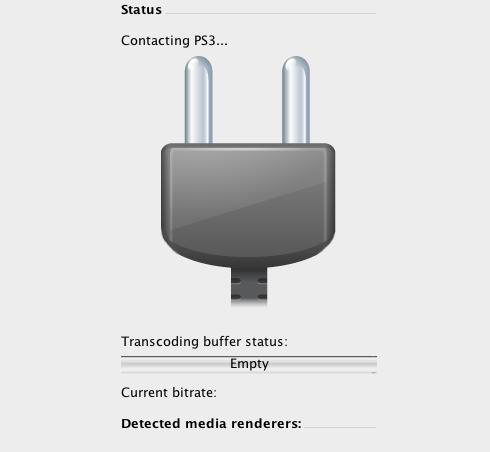
UMS should automatically detect your device. After about 10 seconds, you should see this message:
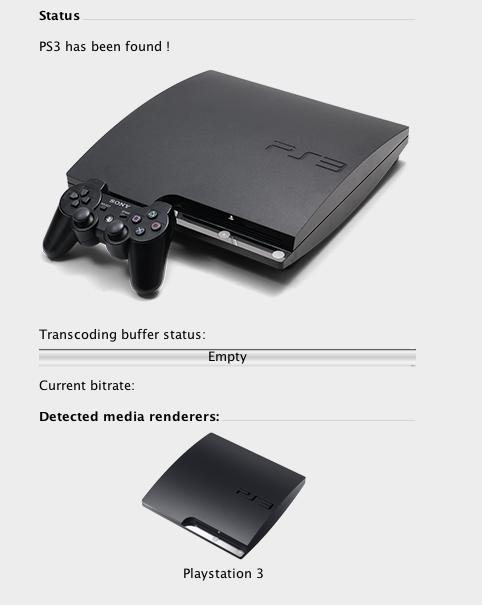
UMS has sucessfully detected your PS3 and connected with it. As a result, UMS should now appear on the cross media bar (XMB) of your PS3:
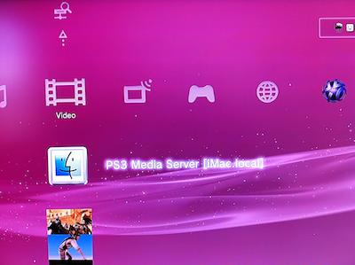
You are now able to browse your computer and play media files.
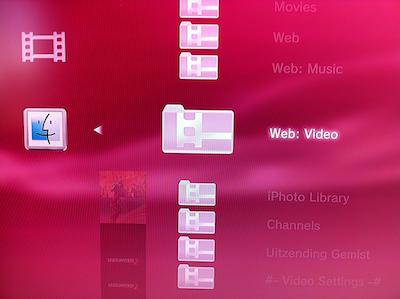
The PlayStation 3 separates "Photo", "Music" and "Video" in different XMB entry points. Even though you see all folders on your media server, you can only see the files that correspond to your XMB entry point.
For example: if you choose "Photo" and open your media server you will see a folder "Web video", but it will be empty because it does not contain any photo files. If you want to view the contents of "Web video", you have to navigate to the XMB option "Video" and browse your computer from there. You will now find it filled with video files.
UMS should automatically detect your device and display it. In some cases UMS does not detect your PS3:
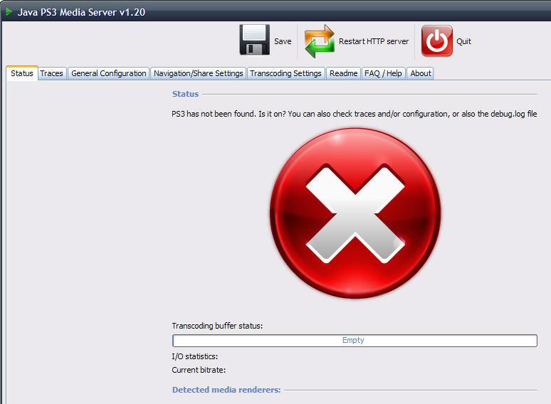
Often it suffices to change to the "General Configuration" tab and verify the network settings:
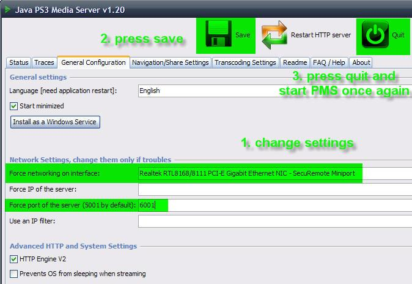
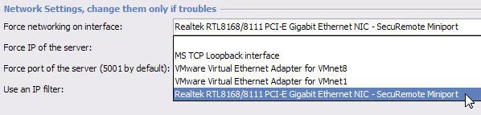
In the majority of reported cases there are two problem causes:
You can solve the problem by choosing the correct network interface and type in an unused port, e.g. 6001. After that save and quit, then start UMS again.
UMS not showing on your DLNA client can be caused by a variety of
factors, but the potential causes can be broken up into two groups -
"Before UDP Broadcast" and "After UDP Broadcast"
The
line in the logfile/trace that separates these two groups (this
signifies the UDP broadcast) is
It's ready! You should see the server appears on XMB
Note 1: for the suggestions below, Windows, Apple and several OEM manufacturers install and enable default protection programs (e.g. Windows Defender or Peer Guardian). Make sure that the settings for all antivirus, firewall, malware and protection programs are checked.
Note 2: direct connections are a special case, so check the additional details at the bottom.
These can usually be spotted through errors in the logfile / trace before the line above.
At this point everything should be fine within UMS, so you need to look externally.
Note 1: Most UPnP settings on routers are to allow the devices on the LAN to dynamically configure the port forwarding and other router settings with minimal user interaction. This should not need to be enabled for the actual UPnP/DLNA traffic in the LAN, and in some cases it actually causes issues when enabled on bad routers.
Note 2: Port forwarding is not required for standard use of UMS. It is only needed if you're trying to stream web-content.
Note 3: Some routers are crap and either a) do not have the proper settings or b) just mishandle traffic regardless of the settings. This can even vary within the same router for wired vs wireless traffic.
You may use a switch or a hub which is really cheap as a workaround. Connect your DLNA device, PC and router to the switch/hub and internet connectivity is still there, but you will not have trouble with your routers firewall anymore... This will of course only work with wired connections.
There are firmware bugs on some DLAN or powerline adapters which prevent certain broadcasts from being transmitted (like using a firewall). This will also cause connection problems.
If you have checked everything else, give the forum or Google a search and see if other people are having UPnP or DLNA issues with the same router. You could also see if a different DLNA program (WMP, TVersity, Wild, etc) works using the same router or settings.
In addition, you can run into issues (both Before and After UDP Broadcast) when trying to use a direct connection (no router or switch, just the computer with UMS and the device)
Examples: